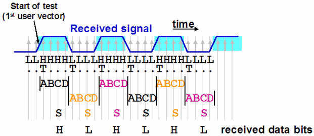

Controlling the tracking behavior
Transition tracking can be switched on and off. This is controlled by the TRACKING_MODE property of a protocol engine test (TTCF command). Adjustment can be enabled (option ACTIVE), it can be suppressed after adjusting once at test start (option FREEZE_AFTER_SYNC), or it can be suppressed altogether (option FREEZE_ALWAYS). When adjustment is disabled, the tracker assumes that transitions occur at their nominal locations, just as in a normal digital test, and lets every observation window immediately follow its predecessor. This option can be useful if you want to use only the pattern matching part of the protocol engine. You can also specify the position of the first sample by specifying a delay for the r1 edge.
By default, adjustment of the observation window is suppressed. On HSM (not SOC), you need a special license to activate this feature.
If adjustment of the observation window is not completely disabled, the window will be adjusted at least once at the start of the test and also after every switch of an IO pin from drive to receive mode. Which window will be adjusted, and how it will be positioned, depends on the first transition after the pattern start (or after the switch to receive mode).
It is possible that the transition which determines the initial adjustment is a BC transition. In this case such a transition is tolerated. For details see Positioning the first observation window and jump by 2.
You can modify the position of the first observation window by specifying a (positive or negative) delay for the first receive edge of a pin that has its protocol engine activated. By default, the delay is 0. In this case the 1/4 UI for the C sample of the first observation window will begin at the start of the first user vector.
The adjustment can (and must) also be blocked (by setting the window formatter to "0") while a bi-directional pin operates in drive mode (for details see Tracking bi-directional pins).
Related Test Method APIs
trackingMode() function of the TRANSITION_TEST_PINS API
Example
In order to simplify the graphic, the following example illustrates the operation mode by 1 UI observation windows. But note that in the actual implementation, the observation window actually consists of 3 UI (= 12 samples); see Drift and transition tracking.

This example shows how the first window can be positioned by defining a delay for the r1 edge. In this case, the delay is 1/2 UI. If r1 had been left at its default value 0, the first observation window would have started two samples earlier.
Functional changes
- Introduced in SmarTest 7.0.1